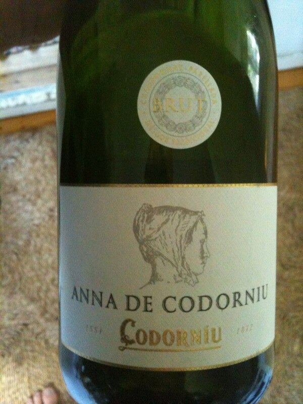

SPUMANTE

Una delle case più antiche ed emblematiche del Cava, a Sant Sadurní d'Anoia, legata ai primi spumanti metodo classico prodotti in Spagna e a cantine moderniste dichiarate monumento.

La famiglia legata a Codorníu documenta la propria attività vitivinicola a Sant Sadurní d'Anoia dal Cinquecento. Il nome deriva dalla famiglia Codorníu, la cui erede, Anna de Codorníu, sposò nel Seicento Miquel Raventós; da allora la casa è legata al cognome Raventós.
Negli anni Settanta dell'Ottocento Josep Raventós produsse a Codorníu i primi spumanti metodo classico —con seconda fermentazione in bottiglia— partendo dalle varietà autoctone del Penedès: Macabeo, Xarel·lo e Parellada. Quel passo è considerato uno dei punti di partenza dell'industria del cava, che fece di Sant Sadurní la sua capitale.
Le cantine di Codorníu, progettate dall'architetto modernista Josep Puig i Cadafalch tra la fine dell'Ottocento e l'inizio del Novecento, sono state dichiarate Monumento storico-artistico. Sotto di esse si estendono chilometri di gallerie sotterranee dove le bottiglie riposano durante l'affinamento.
La gamma comprende cava di ampia diffusione e altri a più lungo affinamento. Anna de Codorníu, omaggio all'antica erede della famiglia, fu tra i primi cava a includere lo Chardonnay. La casa produce anche Cava de Paraje Calificado e fa parte di un gruppo con cantine in altre denominazioni.
Le storiche cantine di Sant Sadurní d'Anoia si possono visitare con percorsi guidati tra gli edifici e le gallerie sotterranee, che di solito si concludono con una degustazione.
